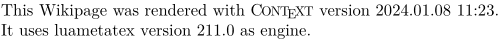

Syntax (autogenerated)
Syntax
| \texenginename |
Description
The command \texenginename provides the name of the engine used.
Example
-
\setuppapersize[A5] This Wikipage was rendered with\ \Context\ version\ \contextversion.\crlf It uses \texenginename\ version \texengineversion\ as engine.
produces
- 
Jit engines (LuajitTeX)
The engine name using LuajitTeX prodcues "LuaTeX" by design.
To print LuajitTeX when used, one can define the following command:
-
% engine=luajittex \def\texjitenginename{\ctxlua{if (texenginename == LuaTeX and jit ~= nil) then context("LuajitTeX") else context.texenginename() end }} \texjitenginename
produces
-

See also
- \texenginename gives the name of the engine (e.g. LuaTeX, or XeTeX).
- \texengineversion gives the version number of the engine (e.g. 0.64).
- \contextversion gives the timestamp of the ConTeXt version in use
- \contextmark gives MKII or MKIV, the ConTeXt major release marker
- \contextversionnumber gives the ConTeXt version followed by the mark.
Help from ConTeXt-Mailinglist/Forum
All issues with: